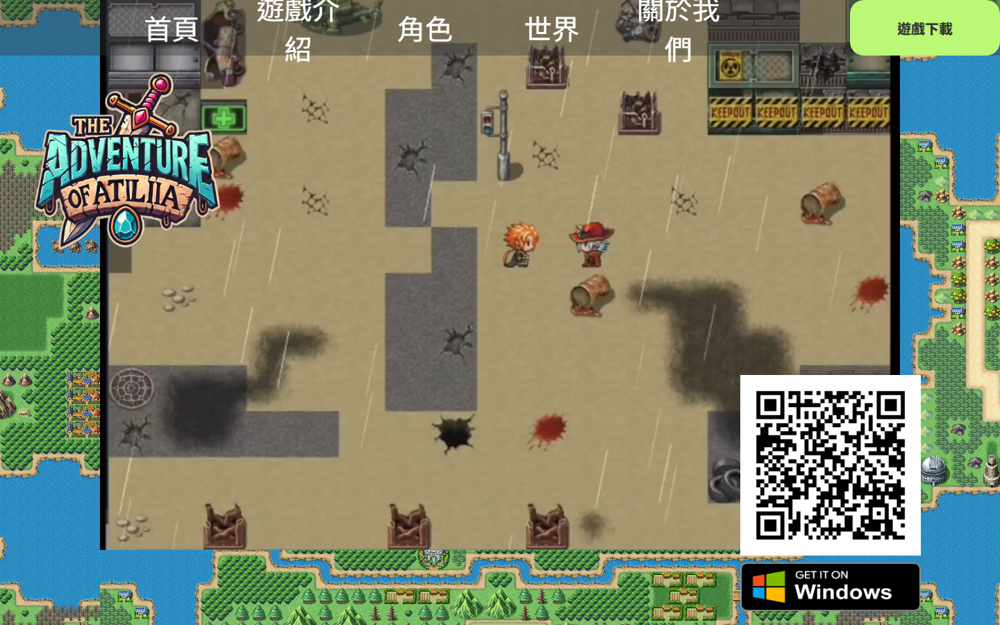
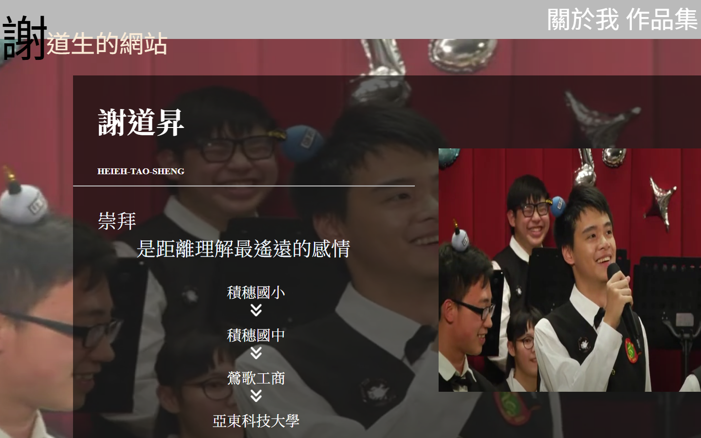
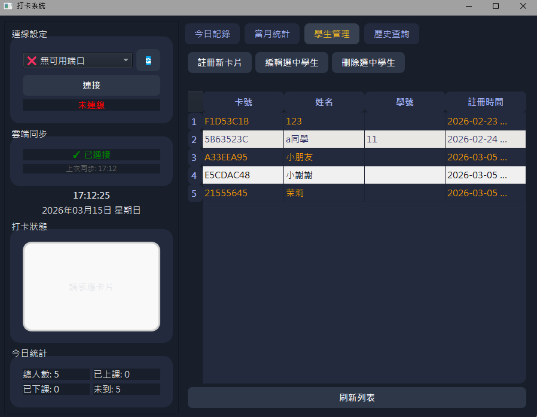
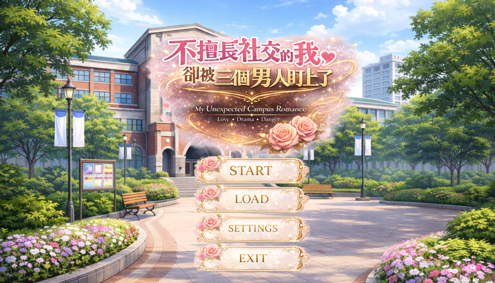
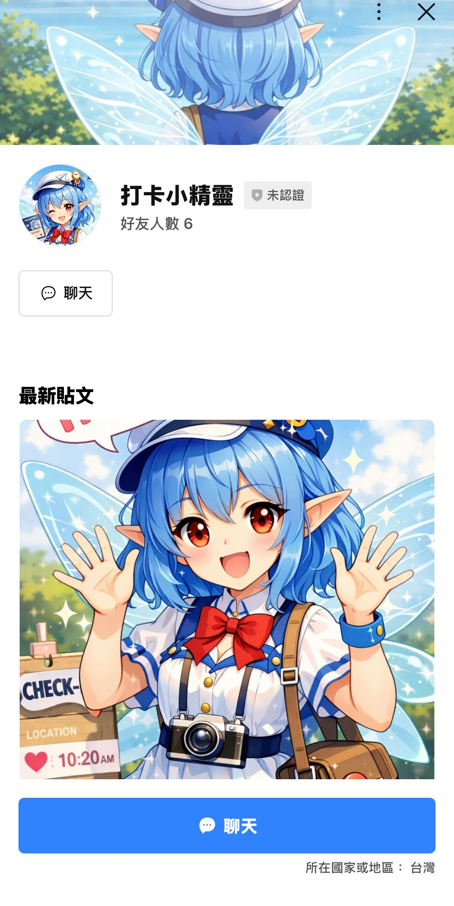
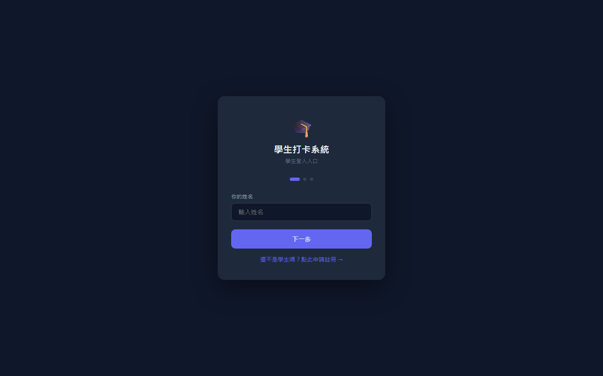
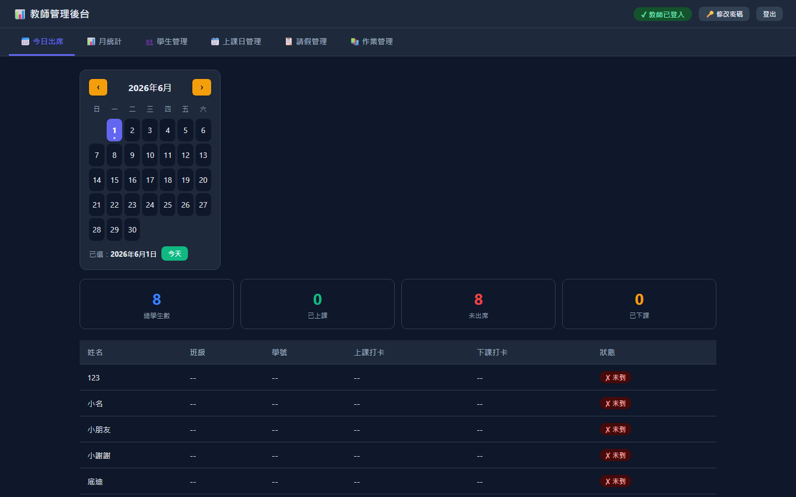

艾特力亞的冒險
本網站為大學專題遊戲所製作的官方網站，由本人獨立完成整體規劃與前端開發。主要提供遊戲世界觀、角色設定與專題理念等內容，作為專題成果的對外展示平台。
Web Portfolio
從大學專題遊戲官網、人生第一個個人網站，到 Python 打卡程式與完整的師生 Web 管理系統—— 這裡是我一路累積的專案精選。
瀏覽作品 ↓七個專案，涵蓋專題展示、個人網頁、後端程式與開發中的作品。

本網站為大學專題遊戲所製作的官方網站，由本人獨立完成整體規劃與前端開發。主要提供遊戲世界觀、角色設定與專題理念等內容，作為專題成果的對外展示平台。

這是我人生第一個個人網站——從零開始摸索 HTML 與 CSS 的初試成果。版面或許還不夠精緻，但對我來說是重要的起點，記錄了最初把自我介紹放上網頁的過程。

本專案為 AI 新秀計畫實作的第一階段：以 Python 開發的簡易打卡系統，設計基本打卡流程與資料紀錄功能，並將打卡資訊傳送至 Firebase 雲端資料庫儲存，作為後續查詢與管理的資料來源。

自製戀愛文字冒險遊戲（開發中，2026/3 起持續進行）。使用 Ren'Py 開發，負責遊戲系統設計與實作分支劇情系統，透過玩家選擇影響流程與事件發展，並建立角色好感度變數系統。同步開發校園地圖探索（hotspot interaction）與 Day-based 推進架構，並整合 AI 生成之角色立繪、背景/CG 與音效、BGM，提升互動體驗。

AI 新秀計畫自由專題應用（2026/3~2026/4）。使用 LINE Messaging API 與系統資料串接，讓使用者可透過 LINE 查詢資訊與進行互動，提升系統使用便利性。目前仍有小 bug，持續修正與優化聊天流程。

支援登入、上下課打卡、月統計、請假申請、作業上傳與密碼管理，完整的學生自助服務介面。

與學生端配套的後台系統，管理出席、學生資料、上課日、請假審核與作業繳交紀錄。
這些作品展現了我在網頁設計、前端開發與後端程式上的探索—— 從專題展示與第一個個人網站，到能實際運作的打卡與管理系統。
每個專案都是不同階段的學習成果，也會隨著技術成長持續更新與擴充。